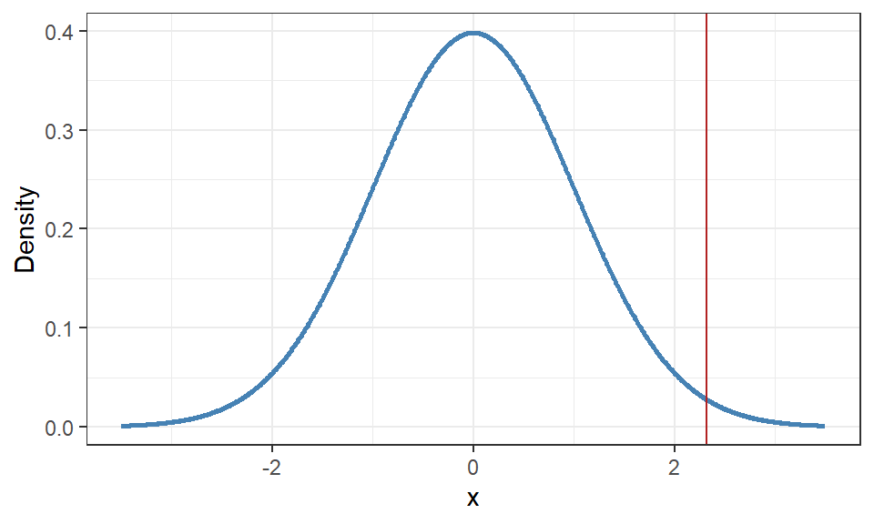

13 Statistical inference in R
Taking the theoretical framework defined in Chapter 12 we will in this chapter look at how we apply it in practice. Beginning with the parametric methods we are usually interested in making inference about the measure of center, either the mean of a continuous variable or a proportion of a categorical variable.
13.1 Inference of a mean
For inference about a mean, the following assumptions must be met:
- independence in the sample,
- can be fulfilled by using a Simple Random Sample (SRS).
- the sample mean, \(\bar{X}\), must be considered normally distributed,
- can be fulfilled using the Central Limit Theorem (CLT) if the sample is sufficiently large, where the rule of thumb is \(n > 30\). CLT states that a mean (or sum) of identically distributed variables will be approximately normally distributed in this case.
- if the sample is small, then the variable of interest, \(X\), must be considered normally distributed. This means that the transformation applied to the mean will also be normally distributed.
13.1.1 Confidence interval of a mean
Using the sample distribution of the mean from Section 11.2 and the structure from Equation 12.1, the confidence interval of a mean is calculated as:
\[ \begin{aligned} \bar{x} \pm t_{\alpha/2; n-1} \cdot \frac{s}{\sqrt{n}} \end{aligned} \] where \(\frac{s}{\sqrt{n}}\) is the standard error of the mean — the uncertainty of the sampling distribution — and \(t_{\alpha/2; n - 1}\) is a quantile from the t-distribution which corresponds to the level of confidence (\(1 - \alpha\)). \(\alpha / 2\) indicates that we want a two-sided interval where the significance is split equally in both ends of the distribution. Together the two parts form the margin of error.
For one-sided intervals we denote \(\alpha\) or \(1 - \alpha\) for lower limit and upper limit intervals respectively to either give a negative or positive quantile.
Important
The t-distribution is used to solve similar problems to the normal distribution when the sample size is small and the population standard deviation is unknown.
In these cases we need to estimate both the mean and standard deviation to make inference about the mean, resulting in an estimate being used within another estimate. This added uncertainty is handled by a property within the t-distribution called the degrees of freedom.
The degrees of freedom describes the number of independent bits of information — in this case is n - 1 — which simplified can be described as the number of observations (n) subtracted by the number of additional estimates (1, the standard deviation) needed for the method.
One of the main properties of the t-distribution is that it converges to the normal distribution with large enough degrees of freedom.
Within R we can calculate the interval of a mean using the function t.test(). This function does much more than only the interval which we will return to in the next section. From the resulting object we can extract the confidence interval using $conf.int.
object <- t.test(snailDat$size)
object$conf.int[1] 19.08906 20.08912
attr(,"conf.level")
[1] 0.95We would interpret this result as; the interval 19.09 to 20.09 covers the true mean size of the shell sizes for all snails with 95 percent confidence.
If we want to calculate a confidence interval with a different confidence level than the default 0.95 (95%) we can adjust the argument conf.level.
t.test(snailDat$size, conf.level = 0.99)$conf.int[1] 18.92986 20.24832
attr(,"conf.level")
[1] 0.9913.1.2 Hypothesis testing of a mean
When formulating our hypotheses for a mean, we need to transform what we want to investigate into mathematical expressions. We also need to ensure that we use the correct mathematical symbol in the alternative hypothesis for the test to be conducted correctly depending on if we are interested in a two- or one-sided test.
Important
One of the most important things to remember when formulating statistical hypotheses is that the equal sign (\(=\)) always should be placed in the null hypothesis. What this means in practice is that the null hypothesis is describing a value that is assumed to be true in the population and the evidence found in the sample is calculated using the null hypothesis as the “truth”.
If we want the two hypotheses to cover all possible outcomes in a one-sided test, we can formulate the null hypothesis to “less than or equal” (\(\le\)) or “greater than or equal” (\(\ge\)), which both include the \(=\) in its denotation.
For example, if we were interested in investigating whether the mean size of snail shells is larger than 19, we would set up hypotheses as follows:
\[\begin{align*} &H_0: \mu \le 19 \\ &H_1: \mu > 19 \end{align*}\]
We now make use of the full functionality of the t.test() function but need to take some time to adjust some of the arguments. Looking at the documentation we can focus on the following arguments of interest:
x: specifies the variable we want to investigate,alternative: specifies the type of alternative hypothesis to be tested, with values “two.sided”, “less”, or “greater”,mu: specifies the value we assume the mean has in the null hypothesis
In accordance with our one-sided alternative hypothesis and the value 19, the function we write in R would be as follows:
t.test(x = snailDat$size,
alternative = "greater",
mu = 19)
One Sample t-test
data: snailDat$size
t = 2.3217, df = 222, p-value = 0.01058
alternative hypothesis: true mean is greater than 19
95 percent confidence interval:
19.16999 Inf
sample estimates:
mean of x
19.58909 The output contains a lot of information in a seemingly unstructured manner which is one of the disadvantages of R, the outputs are not always as clearly structured like other software.
Let us look at the output row by row below the title of the output:
- The first row provides information about which variable the test is performed on.
- The second row provides information about the actual test where:
- t is the computed test statistic,
- df is the degrees of freedom in the t-distribution,
- p-value is the p-value of the test.
- The third row provides information about the type of alternative hypothesis that is being tested.
- The fourth and fifth rows provide a calculated confidence interval defined by the
alternativeargument - The last rows in the output provide descriptive statistics from the sample.
To make a decision from this test, we can directly compare the calculated p-value from the output with the specified significance level. If the p-value is lower, we can reject \(H_0\), otherwise, we cannot reject it.
13.1.3 Visualizing the hypothesis testing
We can also make use of visualizations to determine the decision to be made. Assuming the null hypothesis to be “true”, the standardized sampling distribution of the sample mean would look as follows:
# Sample information
n <- nrow(snailDat)
mean <- mean(snailDat$size)
sd <- sd(snailDat$size)
# Create data frame for plotting
data <- data.frame(
x = seq(-3.5, 3.5, length.out = 1000),
y = dt(x, df = n - 1)
)
# Plot the distributions
ggplot(data, aes(x = x, y = y)) +
geom_line(linewidth = 1, color = "steelblue") +
labs(x = "x", y = "Density") +
theme_bw() The distribution is centered on the standardized mean, 0, and the distance from 0 indicates how many standard deviations away from the hypothesized mean the evidence in the sample is located. The test statistic from the output, 2.3217, shows that the sample drawn had a larger mean shell size than the null hypothesis — a positive value indicates the sample is larger than the null mean, a negative larger value indicates the sample is smaller than the null mean.
We can add the test statistic to the visualization with:
ggplot(data, aes(x = x, y = y)) +
geom_line(linewidth = 1, color = "steelblue") +
labs(x = "x", y = "Density") +
theme_bw() +
geom_vline(xintercept = 2.3217, color = "firebrick")
We can see that the test statistic is placed quite a bit away from the expected outcome that should arise if the null hypothesis was true and the next step is to determine whether or not this is far enough away from the null mean to say we have falsified the null hypothesis or not.
This is where we make use of the p-value. As defined in Section 12.2.1.5, the p-value is a probability that we would find a sample with a more extreme sample mean than the current. The direction of “extreme” is determined by inequality sign in the alternative hypothesis, in this case \(> 19\), leading to the probability calculated as \(P(t > 2.3217) = 0.01058\).
We then compare the p-value to the level of significance to determine if the evidence is far enough away to reject the null hypothesis. The level of significance is placed on the same side of the distribution that the alternative hypothesis defines as “more extreme”, in this case the positive end.
# Defines the significance level
alpha <- 0.05
# Calculates the quantile value that corresponds to the level of significance
critValue <- qt(p = alpha, df = n - 1, lower.tail = FALSE)
ggplot(data, aes(x = x, y = y)) +
geom_line(linewidth = 1, color = "steelblue") +
labs(x = "x", y = "Density") +
theme_bw() +
geom_area(data = subset(data, x >= critValue), fill = "black", alpha = 0.5) +
geom_area(data = subset(data, x >= 2.3217), fill = "firebrick", alpha = 0.8)In this case the p-value (red) is smaller than the significance level (black) resulting in the conclusion that we can reject \(H_0\).
13.2 Inference of a proportion
A proportion is a special case of a mean if we assume that the variable of interest only contain 1s and 0s where 1 denotes a unit with a specific characteristic. Unfortunately we cannot use the assumptions for a mean as the proportion can only take on values between 0 and 1, whereas a mean can be any real value. We must instead look at inference of a proportion as its own type of method with its own assumptions.
There are three main ways to make inferences about a proportion; using the binomial distribution of the count of values with the characteristic, approximating the distribution with the normal distribution using the Wald method, or calculating the absolute minimum and maximum proportions that could have been measured in the sample.
For inference about proportions using the Wald approximation, the following requirements must be met:
- independence in the sample,
- can be fulfilled by using conducting a Simple Random Sample (SRS).
- the variable must be binomial distributed,
- the variable must calculate the number of successes from n independent trials.
- the sample proportion, \(\hat{p}\), must be considered normally distributed,
- specifically \(n\cdot \hat{p} > 5\) and \(n\cdot \hat{q} > 5\) where \(\hat{p}\) is the probability of a success and \(\hat{q}\) is \(1 - \hat{p}\).
13.2.1 Confidence interval of a proportion
Similar to t.test() we can create confidence intervals in R using prop.test().
Note
Note that prop.test() uses another variant of the Wald interval with additional continuity corrections, called a Wilson interval (Wilson (1927)), so the comparison to the Wald formula is not entirely identical.
For example, we are interested in making inference about the proportion of snails that live in an arid habitat. The two different intervals would be calculated as:
## Wald Interval
n <- nrow(snailDat)
p <- (snailDat$habitat == "arid") |> sum() / n
se <- sqrt(p * (1-p) / (n-1))
z <- qnorm(p = .975)
p - z * se [1] 0.4409603p + z * se[1] 0.5724926## Wilson Interval
object <-
snailDat$habitat |>
table() |>
prop.test(correct = FALSE)
object$conf.int[1] 0.4415519 0.5716732
attr(,"conf.level")
[1] 0.95prop.test() makes use of table() to create a frequency table of the two categories where the first is used as the category of interest to create the interval for. If there are more than two categories in the variable of interest, we first must create a new variable that returns one value if the observation is the one sought and another if it is not.
## Using table()
snailDat$habitat |>
table()
arid humid
113 110 ## Creating a new variable and then table()
snailDat |>
mutate(arid =
if_else(
habitat == "arid",
true = "yes",
false = "no") |>
# Converts to a factor with manual order of levels
factor(levels = c("yes", "no"))
) |>
select(arid) |>
table()arid
yes no
113 110 13.2.1.1 Using the binomial distribution
We can also make use of the binomial distribution to create the confidence interval if we cannot fulfill the assumption that the statistic is normally distributed.
object <-
snailDat$habitat |>
table() |>
binom.test()
object$conf.int[1] 0.4391590 0.5741128
attr(,"conf.level")
[1] 0.9513.2.2 Hypothesis test of a proportion
Similar to the hypothesis testing of a mean, we can formulate hypothesis that investigate specific values of a proportion.
For example we could be interested in whether or not the majority of snails live in an arid environment. The term “majority” means more than 50% and because this statement does not include an equal sign, it needs to be formulated in the alternative hypothesis.
\[ \begin{aligned} &H_0: p \le 0.50 \\ &H_1: p > 0.50 \end{aligned} \]
We now make use of the full functionality of the prop.test() function but need to take some time to adjust some of the arguments. Looking at the documentation we can focus on the following arguments of interest:
-x: specifies the number of successes (e.g., defective items), -n: specifies the number of trials (e.g., total items), -alternative: specifies the type of alternative hypothesis to be tested, with values “two.sided”, “less”, or “greater”, -p: specifies the value we assume the proportion has in the null hypothesis.
In accordance with our one-sided alternative hypothesis and the value 0.50, the function we write in R would be as follows:
snailDat$habitat |>
table() |>
prop.test(alternative = "greater", p = 0.50, correct = FALSE)
1-sample proportions test without continuity correction
data: table(snailDat$habitat), null probability 0.5
X-squared = 0.040359, df = 1, p-value = 0.4204
alternative hypothesis: true p is greater than 0.5
95 percent confidence interval:
0.451908 1.000000
sample estimates:
p
0.5067265 The output contains a lot of information in a seemingly unstructured manner which is one of the disadvantages of R, the outputs are not always as clearly structured like other software.
Let us look at the output row by row below the title of the output:
- The first row provides information about the data and the null proportion being investigated.
- The second row provides information about the actual test where:
- X-squared is the computed test statistic,
- df is the degrees of freedom,
- p-value is the p-value of the test.
- The third row provides information about the type of alternative hypothesis that is being tested.
- The fourth and fifth rows provide a calculated confidence interval defined by the alternative argument.
- The last row provides the sample proportion.
To make a decision from this test, we can directly compare the calculated p-value from the output with the specified significance level. If the p-value is lower, we can reject \(H_0\), otherwise, we cannot reject it.
13.3 Exercises
David Lack (Lack et al. 1945) conducted analyses of information about finches on the Galápagos Islands during the first half of the 20th century, using data collected by the California Academy of Sciences during their expeditions from 1905-06. The dataset darwin-finches.csv contains a subset of the collected information from four species within the genus Geospiza. The six variables are:
island: Abbreviation of the island where the specimen was examined;species: Genus and species of the specimen;sex: F or M;beak_height: height of the bird’s beak (mm);upper_beak_length: length of the upper part of the bird’s beak from the base to the tip (mm);nostril_upper_beak_length: similar toupper_beak_lengthbut measures from the nostril to the tip of the beak (mm).
Ensure that the dataset appears as expected in the R environment before proceeding with the exercises!
Construct a 95% confidence interval for the proportion of Geospiza magnirostris in the population using the normal approximation. Is the method suitable for this data? Interpret the interval.
Investigate whether the proportion of Geospiza magnirostris is significantly greater than 10%. Calculate the p-value for the test using the normal and binomial distribution to draw your conclusions. Compare the two p-values and discuss the practical difference between the two methods and their conclusion.
Investigate whether the average beak height among Geospiza magnirostris is significantly different from 19.5 mm.
Investigate whether the average beak height among Geospiza magnirostris is significantly less than 19.5 mm.
Calculate two confidence intervals that examines the same hypotheses as in c) and d) respectively. What is the practical difference between the two interpretations of the intervals?